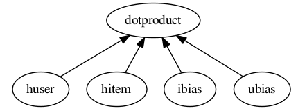

Config Tutorial¶
The config module defines the AntGraph class.
The basic idea is to represent any directed acyclic graph (DAG) of higher level tensorflow operations
in a condensed and visually readable format. Here is a picture of a DAG of operations
derived from it’s representation in .config format:
Here are contents of the corresponding .config file:
dotproduct x_dot_y()
-all_user dnn([$kfactors,$kfactors,$kfactors], activation='tanh',bn=True,keep_prob=None)
--tanh_user tf.nn.tanh()
---merge_user concat($kfactors)
----huser lookup(dataname='user', initrange=$initrange, shape=[None, $kfactors])
----hage dnn([$kfactors,$kfactors,$kfactors],activation='tanh',bn=True,keep_prob=None)
-----agelookup embedding()
------age placeholder(tf.float32)
------user placeholder(tf.int32)
----hsex dnn([$kfactors,$kfactors,$kfactors],activation='tanh',bn=True,keep_prob=None)
-----sexlookup embedding()
------sex_weights weights('tnorm', tf.float32, [2, $kfactors])
------sexes embedding()
-------sex placeholder(tf.int32)
-------user placeholder(tf.int32)
----hocc dnn([$kfactors,$kfactors,$kfactors],activation='tanh',bn=True,keep_prob=None)
-----occlookup embedding()
------occ_weights weights('tnorm', tf.float32, [21, $kfactors])
------occs embedding()
-------occ placeholder(tf.int32)
-------user placeholder(tf.int32)
----hzip dnn([$kfactors,$kfactors,$kfactors],activation='tanh',bn=True,keep_prob=None)
-----ziplookup embedding()
------zip_weights weights('tnorm', tf.float32, [1000, $kfactors])
------zips embedding()
-------zip placeholder(tf.int32)
-------user placeholder(tf.int32)
----husertime dnn([$kfactors,$kfactors,$kfactors],activation='tanh',bn=True,keep_prob=None)
-----time placeholder(tf.float32)
-all_item dnn([$kfactors,$kfactors,$kfactors], activation='tanh',bn=True,keep_prob=None)
--tanh_item tf.nn.tanh()
---merge_item concat($kfactors)
----hitem lookup(dataname='item', initrange=$initrange, shape=[None, $kfactors])
----hgenre dnn([$kfactors,$kfactors,$kfactors],activation='tanh',bn=True,keep_prob=None)
-----genrelookup embedding()
------genre placeholder(tf.float32)
------item placeholder(tf.int32)
----hmonth dnn([$kfactors,$kfactors,$kfactors],activation='tanh',bn=True,keep_prob=None)
-----monthlookup embedding()
------month_weights weights('tnorm', tf.float32, [12, $kfactors])
------months embedding()
-------month placeholder(tf.int32)
-------item placeholder(tf.int32)
----hyear dnn([$kfactors,$kfactors,$kfactors],activation='tanh',bn=True,keep_prob=None)
-----yearlookup embedding()
------year placeholder(tf.float32)
------item placeholder(tf.int32)
----htfidf dnn([$kfactors,$kfactors,$kfactors],activation='tanh',bn=True,keep_prob=None)
-----tfidflookup embedding()
------tfidf_doc_term placeholder(tf.float32)
------item placeholder(tf.int32)
----hitemtime dnn([$kfactors,$kfactors,$kfactors],activation='tanh',bn=True,keep_prob=None)
-----time placeholder(tf.float32)
-ibias lookup(dataname='item', shape=[None, 1], initrange=$initrange)
-ubias lookup(dataname='user', shape=[None, 1], initrange=$initrange)
The lines in the .config file consist of a possibly empty graph marker, followed by a node name, followed by a node function call. We will discuss each of these in turn.
Terms¶
Node description: A line in a .config file
- Graph marker: A character or sequence of characters that delimits graph dependencies. Specified by the graph marker parameter
- for the constructor to AntGraph. By default ‘-‘.
Node name: The first thing on a line in a .config file after a possibly empty sequence of graph markers and possible whitespace.
- Node function: A function which takes as its first argument a tensor or structured list of tensors, returns
- a tensor, or structured list of tensors, and has an optional name argument.
Node function call: The last item in a node description.
Graph Markers¶
In the .config file depicted above the graph marker is ‘-‘. The graph markers in a .config file define the edges of the DAG. Lines in a .config file with no graph markers represent nodes with outorder = 0. These are the ‘roots’ of the DAG. The graph representation in .config format is similar to a textual tree or forest representation, however, multiple lines may refer to the same node. For each node description of a node, there is an edge from this node to the node described by the first line above of this node description that has one less graph marker.
Node Names¶
The next thing on a line following a possibly empty sequence of graph markers is the node name. Node names are used for unique variable scope of the tensors created by the node function call. The number of nodes in a graph
is the number of unique
node names in the .config file.
Examples¶
The best way to get a feel for how to construct a DAG in this format is to try some things out. Since node function calls have no bearing on the high level structure of the computational graph let’s simplify things and omit the node function calls for now. This won’t be acceptable .config syntax but it will help us focus on the exploration of this form of graph representation.
Here is a .config file minus the function calls (notice the optional whitespace before graph markers):
dotproduct
-huser
-hitem
-ibias
-ubias
Save this content in a file called test.config. Now in an interpreter:
>>> from antk.core import config
>>> config.testGraph('test.config')
This image should display:
Now experiment with test.config to make some more graphs.
1 2 3 4 5 6 7 8 | dotproduct
-huser
--hitem
-ibias
--hitem
-ubias
--hitem
-hitem
|
Note
Repeated Node Names Graph traversal proceeds in the fashion of a postorder tree traversal. When node names are repeated in a .config file, the output of this node is the output of the node description with this name which is first encountered in graph traversal. So, for the above example .config file and its corresponding picture below, the output of the hitem node would be the output of the node function call (omitted) on line 3. The order in which the nodes are evaluated for the config above is: hitem, huser, ibias, ubias, dotproduct.
dotproduct
-huser
--hitem
-ibias
--hitem
-ubias
--hitem
-hitem
a
b
c
d
Warning
Cycles: ANTk is designed to create directed acyclic graphs of operations from a config file, so cycles are not allowed. Below is an example of a config setup that describes a cycle. This config would cause an error, even if the node function calls were made with proper inputs.
hitem
-huser
--hitem
-ibias
--hitem
-ubias
--hitem
-hitem
Node Functions¶
The first and only thing that comes after the name in a node description is a node function call. Node functions always take tensors or structured lists of tensors as input, return tensors or structured lists of tensors as output, and have an optional name argument. The syntax for a node function call in a .config is the same as calling the function in a python script, but omitting the first tensor input argument and the name argument. The tensor input is derived from the graph. A node’s tensor input is a list of the output of it’s ‘child’ nodes’ (nodes with edges directed to this node) function calls. If a node has inorder = 1 then its input is a single tensor as opposed to a list of tensors of length 1.
Any node functions defined in node_ops may be used in a graph, as well as any tensorflow functions which satisfy the
definition of a node function. For tensorflow node function calls ‘tensorflow’ is abbreviated to ‘tf’.
User defined node functions may be used in the graph when specified by the optional
arguments function_map, and imports, to the AntGraph constructor.
The node name is used for the optional name argument of the node function.
The AntGraph object¶
To use a .config file to build a tensorflow computational graph you call the AntGraph constructor with the
path to the .config file as the first argument, and some other optional arguments. We’ll make the multinomial logistic
regression model from tensorflow’s basic MNIST tutorial, and then extend this model to a deep neural network
in order to demonstrate how to use a .config file in your tensorflow code.
Create a file called antk_mnist.py and start off by importing the modules and data we need.
1 2 3 4 5 | import tensorflow as tf
from antk.core import config
from tensorflow.examples.tutorials.mnist import input_data
mnist = input_data.read_data_sets("MNIST_data/", one_hot=True)
|
We’ll need a config file called logreg.config with the content below:
pred mult_log_reg(numclasses=10)
-pixels placeholder(tf.float32)
Notice that we didn’t specify any dimensions for the placeholder pixels. We need to hand a dictionary with keys corresponding to placeholders with unspecified dimensions, and values of the data that will later get fed to this placeholder during graph execution. This way the constructor will infer the shape of the placeholder. This practice can help eliminate a common source of errors in constructing a tensorflow graph. To instantiate the graph from this config file we add to antk_mnist.py:
6 7 8 9 | with tf.name_scope('antgraph'):
antgraph = config.AntGraph('logreg.config', data={'pixels': mnist.test.images})
x = antgraph.placeholderdict['pixels']
y = antgraph.tensor_out
|
There are three accessible fields of a AntGraph object which contain tensors created during graph construction from
a .config file:
tensordict: a python dictionary of non-placeholder tensors.placeholderdict: a python dictionary of placeholder tensors.tensor_out: The output of the nodes of the graph with outorder 0 (no graph markers).
Note that we could replace line 9 above with the following:
9 | y = antgraph.tensordict['pred']
|
We can now complete the simple MNIST model verbatim from the tensorflow tutorial:
10 11 12 13 14 15 16 17 18 19 20 21 22 23 24 25 26 27 28 29 30 31 32 33 | y_ = tf.placeholder(tf.float32, [None, 10])
cross_entropy = -tf.reduce_sum(y_*tf.log(y))
train_step = tf.train.GradientDescentOptimizer(0.01).minimize(cross_entropy)
correct_prediction = tf.equal(tf.argmax(y, 1), tf.argmax(y_, 1))
accuracy = tf.reduce_mean(tf.cast(correct_prediction, tf.float32))
# tensorboard stuff
accuracy_summary = tf.scalar_summary('Accuracy', accuracy)
session = tf.Session()
summary_writer = tf.train.SummaryWriter('log/logistic_regression', session.graph.as_graph_def())
session.run(tf.initialize_all_variables())
for i in range(1000):
batch_xs, batch_ys = mnist.train.next_batch(100)
session.run(train_step, feed_dict={x: batch_xs, y_: batch_ys})
acc, summary_str = session.run([accuracy, accuracy_summary], feed_dict={x: mnist.test.images,
y_: mnist.test.labels})
summary_writer.add_summary(summary_str, i)
print('epoch: %f acc: %f' % (float(i*100.0)/float(mnist.train.images.shape[0]), acc))
|
If we let antk_mnist.py take a command line argument for a .config file we can use antk_mnist.py with any number of .config files expressing arbitrarily complex architectures. This will allow us to quickly search for a better model. Let’s use the argparse module to get this command line argument by adding the following lines to antk_mnist.py.
import argparse
parser = argparse.ArgumentParser(description="Model for training arbitrary MNIST digit recognition architectures.")
parser.add_argument("config", type=str,
help="The config file for building the ant architecture.")
args = parser.parse_args()
Now we change the former line 7 to:
antgraph = AntGraph(args.config, data={'pixels': mnist.dev.images})
We could try a neural network with nnet_mnist.config:
pred mult_log_reg(numclasses=10)
-network dnn([100,50,10], activation='tanh')
--pixels placeholder(tf.float32)
This should get us to about .94 accuracy. We might want to parameterize the number of hidden nodes per hidden layer or the activation function. For this we can use some more command line arguments, and the config file variable marker ‘$’.
First we change nnet_mnist.config as follows:
pred mult_log_reg(numclasses=10)
-network dnn([$h1, $h2, $h3], activation=$act)
--pixels placeholder(tf.float32)
Next we need some more command line arguments for antk_mnist.py. So we need to add these lines:
parser.add_argument("-h1", type=int,
help="Number of hidden nodes in layer 1.")
parser.add_argument("-h2", type=int,
help="Number of hidden nodes in layer 2.")
parser.add_argument("-h3", type=int,
help="Number of hidden nodes in layer 3.")
parser.add_argument("-act", type=int,
help="Type of activation function.")
Finally we need to bind the variables in the .config file in our call to the AntGraph constructor
using the optional variable_bindings argument.
with tf.name_scope('antgraph'):
antgraph = AntGraph(args.config, data={'pixels': mnist.dev.images},
variable_bindings={'h1': args.h1,
'h2': args.h2,
'h3': args.h3,
'act': args.act})
For something really deep we might try a highway network with high_mnist.config:
pred mult_log_reg(numclasses=10)
-network3 dnn([50, 20])
--network2 highway_dnn([50]*20, activation='tanh', bn=True)
---network dnn([100, 50])
----pixels placeholder(tf.float32)
This may take 5 or 10 minutes to train but should get around .96 accuracy.
These higher level abstractions are nice for automating the creation of weight and bias Variables, and the Tensors involved a deep neural network architecture. However, one may need direct access to tensors created within a complex operation such as highway_dnn, to for instance analyze the training of a model. There is access to these tensors via a standard tensorflow function and some collections associated with each node defined in the .config file. To demonstrate accessing the tensors created by the highway_dnn operation in high_mnist.config, at the end of antk_mnist.py we can add:
weights = tf.get_collection('network')
bias = tf.get_collection('network_bias')
other = tf.get_collection('network')
for i, wght in enumerate(weights):
print('weight %d: name=%s tensor=%s' % (i, wght.name, wght))
for i, b in enumerate(bias):
print('bias %d: name=%s tensor=%s' % (i, b.name, b))
for i, tensor in enumerate(other):
print('other %d: name=%s tensor=%s' % (i, tensor.name, tensor))
And post training we get the following output modulo two memory addresses:
weight 0: name=antgraph/network/layer0/add:0 tensor=Tensor("antgraph/network/layer0/add:0", shape=(?, 100), dtype=float32)
weight 1: name=antgraph/network/layer1/add:0 tensor=Tensor("antgraph/network/layer1/add:0", shape=(?, 50), dtype=float32)
bias 0: name=network/layer0/network/Bias:0 tensor=<tensorflow.python.ops.variables.Variable object at 0x7f1b90764350>
bias 1: name=network/layer1/network/Bias:0 tensor=<tensorflow.python.ops.variables.Variable object at 0x7f1b90723d50>
other 0: name=antgraph/network/layer0/add:0 tensor=Tensor("antgraph/network/layer0/add:0", shape=(?, 100), dtype=float32)
other 1: name=antgraph/network/layer1/add:0 tensor=Tensor("antgraph/network/layer1/add:0", shape=(?, 50), dtype=float32)